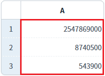
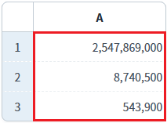
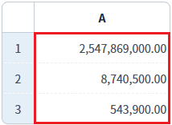

GridView의 메소드를 사용하여 바디 컬럼의 'dataType' 속성과 'displayFormat' 속성을 설정하고, 'dataType' 속성의 설정값을 반환받는 예제입니다.
이 예제에서 사용한 메소드는 다음과 같습니다. - getDataType : 컬럼의 dataType 속성의 설정값을 반환. - setDataType : 컬럼의 dataType 속성의 설정값을 설정. - setColumnDisplayFormat : 컬럼의 displayFormat 속성의 값을 설정.
컬럼의 dataType 속성의 설정 값 반환받기
컬럼의 dataType 속성을 'number'로 설정하고 displayFormat 속성을 '#,###'으로 스크립트로 설정하기
컬럼의 dataType 속성을 'float'로 설정하고 displayFormat 속성을 '#,###.00'으로 스크립트로 설정하기
1
STEP 1: 초기 상태 확인하기
'A' 컬럼의 데이터는 문자열(text)로 설정된 상태입니다.
Image 1.브라우저(Chrome) 실행 예시

2
STEP 2: 컬럼의 dataType을 확인합니다.
"'A' 컬럼의 dataType 속성의 설정 값 반환받기 - 로그 출력" 버튼을 클릭합니다.
예제 영역 '로그 확인' 또는 브라우저 개발자 도구 콘솔에 출력된 로그를 확인합니다.
Example 1.Log
[11:00:29] ** 메소드 scwin.btn_ex1_1_onclick **
[11:00:29] grd_exam1.getDataType("col_a"); 반환 값 : text3
STEP 3: 'A' 컬럼의 dataType 속성을 'number'로 설정하고 displayFormat 속성을 '#,###'으로 설정합니다.
"'A' 컬럼의 dataType 속성을 'number'로 설정하고 displayFormat 속성을 '#,###'으로 설정하기" 버튼을 클릭합니다.
4
STEP 4: 실행 결과를 확인합니다.
'A' 컬럼의 서식이 변경됩니다.
Image 2.브라우저(Chrome) 실행 예시

5
STEP 5: 컬럼의 dataType을 확인합니다.
"'A' 컬럼의 dataType 속성의 설정 값 반환받기 - 로그 출력" 버튼을 클릭합니다.
예제 영역 '로그 확인' 또는 브라우저 개발자 도구 콘솔에 출력된 로그를 확인합니다.
Example 2.Log
[11:06:27] ** 메소드 scwin.btn_ex1_1_onclick **
[11:06:27] grd_exam1.getDataType("col_a"); 반환 값 : number6
STEP 6: 'A' 컬럼의 dataType 속성을 'float'로 설정하고 displayFormat 속성을 '#,###.00'으로 설정합니다.
"'A' 컬럼의 dataType 속성을 'float'로 설정하고 displayFormat 속성을 '#,###.00'으로 설정하기" 버튼을 클릭합니다.
7
STEP 7: 실행 결과를 확인합니다.
'A' 컬럼의 서식이 변경됩니다.
Image 3.브라우저(Chrome) 실행 예시

8
STEP 8: 컬럼의 dataType을 확인합니다.
"'A' 컬럼의 dataType 속성의 설정 값 반환받기 - 로그 출력" 버튼을 클릭합니다.
예제 영역 '로그 확인' 또는 브라우저 개발자 도구 콘솔에 출력된 로그를 확인합니다.
Example 3.Log
[11:09:00] ** 메소드 scwin.btn_ex1_1_onclick **
[11:09:00] grd_exam1.getDataType("col_a"); 반환 값 : float1
스크립트를 작성합니다.
GridView의 'getDataType' 메소드를 사용합니다.
Example 4.Script
//예제 파일의 스크립트 "scwin.btn_ex1_1_onclick"을 참고하세요. //GridView 'grd_exam1'의 'A' 컬럼의 dataType 속성의 설정값을 반환 받습니다. var returnValue = grd_exam1.getDataType("col_a");
1
스크립트를 작성합니다.
GridView의 'setDataType' 메소드를 사용합니다.
설정 가능한 dataType 값은 아래와 같습니다.
- text, number, float
Example 5.Script
//예제 파일의 스크립트 "scwin.btn_ex1_2_onclick" 또는 "scwin.btn_ex1_3_onclick"을 참고하세요. //GridView 'grd_exam1'의 'A' 컬럼의 dataType 속성을 'number'로 설정합니다. grd_exam1.setDataType("col_a", "number"); //GridView 'grd_exam1'의 'A' 컬럼의 dataType 속성을 'float'로 설정합니다. grd_exam1.setDataType("col_a", "float"); //GridView 'grd_exam1'의 'A' 컬럼의 dataType 속성을 'text'로 설정합니다. grd_exam1.setDataType("col_a", "text");
1
스크립트를 작성합니다.
GridView의 'setColumnDisplayFormat' 메소드를 사용합니다.
Example 6.Script
//예제 파일의 스크립트 "scwin.btn_ex1_2_onclick" 또는 "scwin.btn_ex1_3_onclick"을 참고하세요. //GridView 'grd_exam1'의 'A' 컬럼의 displayFormat 속성의 값을 '#,###'으로 설정합니다. grd_exam1.setColumnDisplayFormat("col_a", "#,###"); //GridView 'grd_exam1'의 'A' 컬럼의 displayFormat 속성을 '#,###.00'으로 설정합니다. grd_exam1.setColumnDisplayFormat("col_a", "#,###.00");
getDataType( colID )
setDataType( colIndex , dataType )
setColumnDisplayFormat( colIndex , displayFormat )